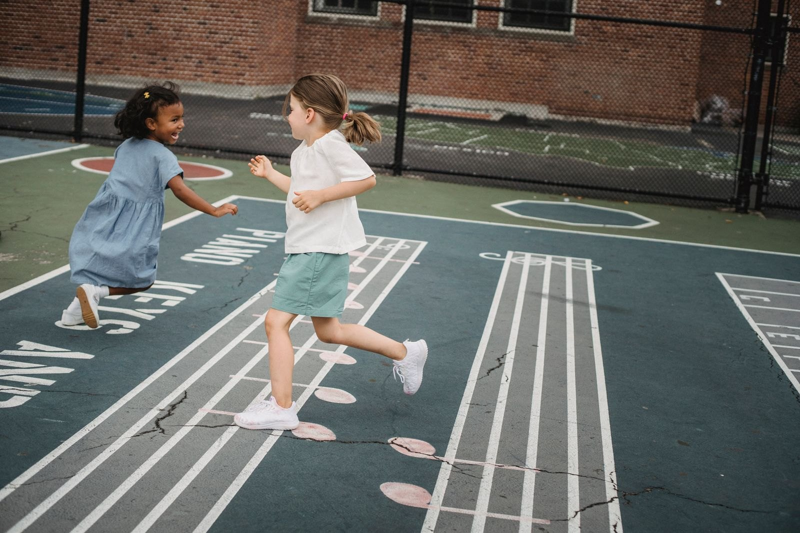

Building the everyday skills kids need to learn, play and care for themselves, in the comfort of home.
Parents reasonably ask what "occupational" has to do with a seven-year-old. The occupation of childhood is learning, playing, making friends and becoming more independent.
Occupational therapy looks at the skills sitting underneath those everyday moments. Gripping a pencil without the whole hand aching by the third sentence. Tolerating the seam in a sock. Staying seated long enough to finish a worksheet. Catching a ball, climbing a play structure, getting dressed without a twenty-minute standoff.
When one of those pieces is harder than it should be, it rarely stays contained. A child who cannot manage buttons is late every morning. A child overwhelmed by noise avoids the cafeteria, and then avoids the friendships that happen there. The original difficulty is small; what grows around it is not.
We begin by watching your child do the things that are genuinely difficult, in the place where they are difficult. A clinic room shows how a child performs a task on request. Your kitchen at 7:30 in the morning shows why the day comes apart.
From there we build a plan around a handful of goals you would actually notice, and we explain what each activity is for. Nothing we ask your child to do is arbitrary, and you should never have to guess why we are doing it.
Progress rarely arrives as a breakthrough. It looks like a shirt buttoned without help, a birthday party that ends well, a teacher mentioning your child finished their work for the first time this month. We review goals with you regularly, and we say plainly when something is not working so we can change course.
Every plan is customized to your child.
Strength and coordination for writing, buttoning, cutting and using utensils.
Balance, body awareness and motor planning so kids move with confidence.
Eye-hand coordination and tracking for reading, puzzles and copying.
Tailored activities for sensory sensitivities, plus coaching for parents.
Strategies for calming, attention and coping with big feelings.
Independence with dressing, grooming, feeding and toileting.
Play, turn-taking, problem solving and peer connection.
Tying shoes, riding a bike, catching a ball.
Attention, seated work tolerance, following directions and recall.

From the classroom to the playing field, occupational therapy builds the coordination, focus and confidence kids use all day.
We connect with your child and set the tone with play.
Engaging work that builds the skills on your plan.
Simple ideas to practice before the next visit.
Call 702-482-8713 or send us a message.